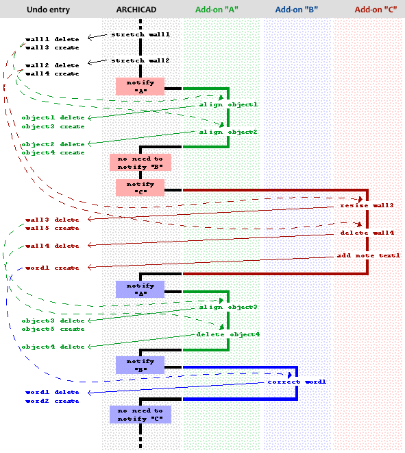

Notification Manager
The Notification Manager lets your add-on be integrated more into the Archicad environment.
It is very important to understand the underlying ideas and technologies in order to be able to use the services in the right way.
It is very easy to block Archicad using the Notification Manager in a wrong way; so be very careful!
The key point that you have to keep in mind is that notifications are coming in the background, without any user interaction. Plan your system concentrating on this issue; do not perform time consuming operations, and also do not make changes that have global effects, although the Notification Manager tries to detect and refuse such operations, of course.
What kind of events can an add-on receive notification of?
An add-on can catch events occured to the actual project such as opening, saving, closing the plan file; can be notified of teamwork events, and several changes in the program environment. Furthermore the add-ons can get notification of events happened to the elements of the project database such as creation, modification and deletion. Also there can be notified of undoing and redoing element database changes.
Functions
All of the notification manager functions begin with the ACAPI_Notify_ prefix. This function family gives support to register your add-on to receive notifications when the requested event(s) occured. Once a notification is posted you get the control and you are allowed to call almost all of the API functions to handle the event.
In order to be notified of certain events you have to make a registration with the following functions:
ACAPI_Notify_CatchProjectEvent
ACAPI_Notify_CatchViewEvent
ACAPI_Notify_CatchToolChange
ACAPI_Notify_CatchSelectionChange
ACAPI_Notify_CatchChangeDefaults
ACAPI_Notify_CatchNewElement
ACAPI_Notify_InstallElementObserver
ACAPI_Notify_CatchElementReservationChange
ACAPI_Notify_CatchLockableReservationChange
ACAPI_Notify_RegisterEventHandler
ACAPI_Notify_UnregisterEventHandler
If you would like to receive notifications of certain events from the application start up on, you can claim your add-on to be pre-loaded by returning APIAddon_Preload from the CheckEnvironment function instead of APIAddon_Normal. This ensures that the Initialize function of your add-on will be called right after start up, and there you can register your callback functions. While you have any callback function installed into the API registration, your add-on keeps loaded in the memory, thus the function pointers remain valid.
The following functions are supported to provide access to additional information while handling a notification posted to you:
ACAPI_Notify_GetParentElement
ACAPI_Notify_GetTranParams
Element related notifications
Monitoring elements
In order to be notified of events that happen to a specified element in the database you have to attach an observer to the element with the ACAPI_Element_AttachObserver function. This information then will be saved into the project file, so next time you use that plan the notification system will notify your add-on about changes of elements you have marked for monitoring before.
You can catch element creation events if your add-on installs an APIElementEventHandlerProc element event handler function with ACAPI_Notify_CatchNewElement. You may specify a certain type of elements if you are interested in these new elements only. You can use the same callback function for more element types at the same time. If you want to follow up the modifications of the newly created element, you can attach an observer to it at once right from the new element callback.
How does it work?
The element related notification system is based on the undo list of Archicad, that is it processes the undo entries created by the last operation.
Assume that there are three add-ons monitoring some set of elements in the current project. Add-on "A" has linked objects to walls, and watches if something happens to those walls to keep the objects aligned to the walls. Add-on "B" has a sort of autotext functionality, it is to be notified of word element creation. Finally Add-on "C" controls the length of walls, it may delete some walls and replace them with a note.
The following figure shows what happens in this configuration if the user stretches two walls on the floor plan:

After editing the walls the notification mechanism searches the current undo entry for elements that the first add-on is supposed to do something with. Whenever it finds an element reference that the add-on has attached observer to, or the element was created and the add-on has required notification of new elements of that type, the notification manager calls the appropriate callback function of the add-on.
After reaching last entry the original operation created in the undo step, the whole searching method restarts from the beginning for the next add-on to be notified.
On being notified an add-on probably adds new entries to the current undo step. However the add-on will not be notified of element changes made by itself.